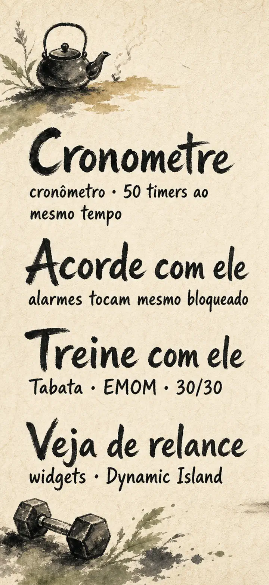
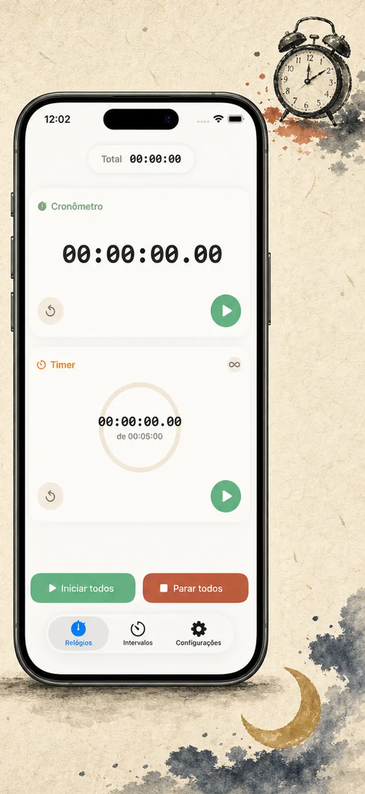
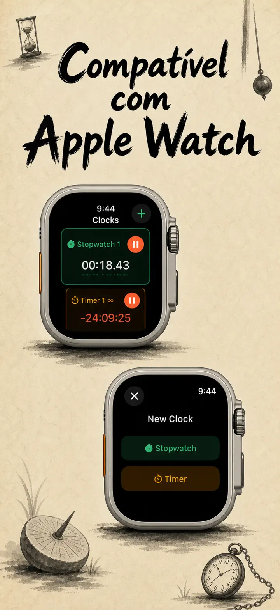
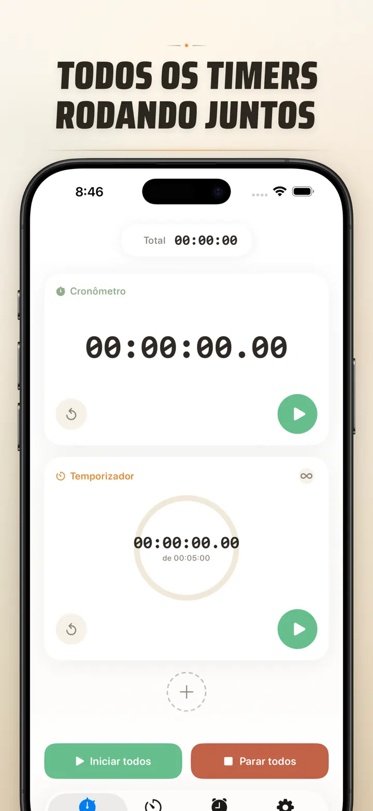
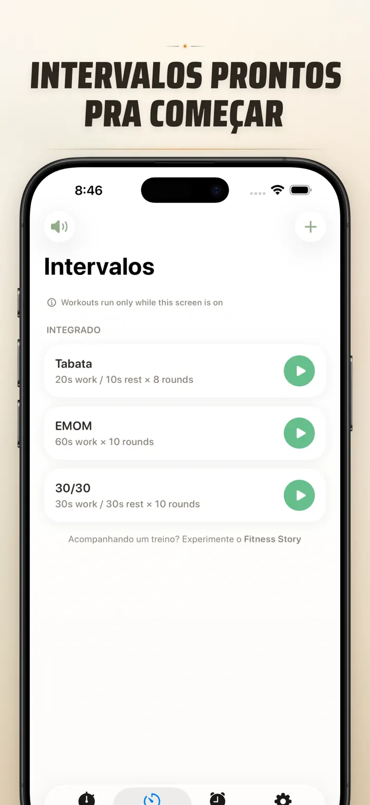
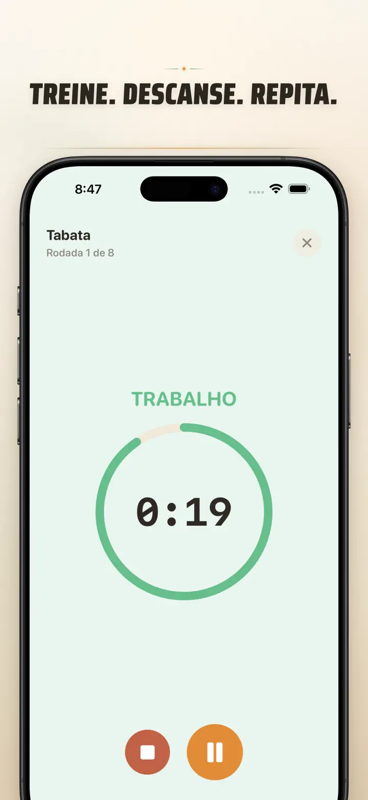
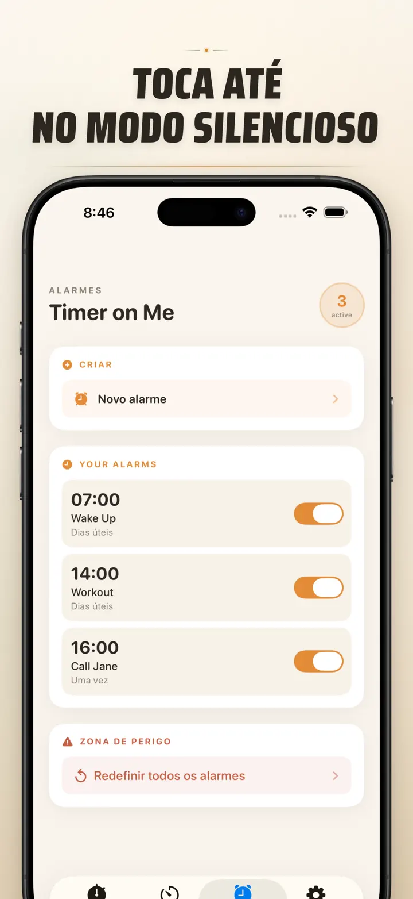

Timer on Me
Timer, Alarme, Cronômetro HIIT
Agora com alarmes com data: configure um alarme único para qualquer data e horário, com alarmes recorrentes, 50 timers, HIIT & Tabata e Apple Watch.
Baixar na App Store
Sobre o app
Timer on Me é seu multi timer e cronômetro pra iPhone, iPad e Apple Watch. Até 50 timers rodando ao mesmo tempo, intervalos precisos e alarmes que tocam de verdade — mesmo com iPhone bloqueado ou app fechado.
ALARMES
- Despertador e lembretes com rótulos personalizados e programação por dia da semana
- Com tecnologia AlarmKit — tocam mesmo com iPhone bloqueado ou Timer on Me fechado
- Soneca configurável (3 / 5 / 9 / 15 / 30 minutos) ou sem soneca
- Escolha entre os toques integrados ou importe seus próprios sons
- Ative/desative com um toque na aba Alarmes dedicada
TREINO E INTERVALOS
- Presets Tabata, EMOM e 30/30 prontos — dois toques e já começa
- Editor de intervalos personalizado: trabalho, descanso e rounds em minutos e segundos
- Modo treino em tela cheia com mudança de cor por fase e opção de silenciar
- Pause, pule e continue no meio do treino sem perder o ritmo
APPLE WATCH
- App nativo real do watchOS, não é só um espelho do celular
- Vários cronômetros e timers rodando no pulso ao mesmo tempo
- Cronômetro com precisão de centésimos de segundo
- Complicações dedicadas pra abrir com um toque
- Funciona sozinho, até sem o iPhone por perto
50 TIMERS JUNTOS
- Até 50 timers e cronômetros independentes na mesma sessão
- Inicie, pare e zere individualmente ou em grupo
- Repetição automática pra rounds cíclicos
- Os timers continuam depois do zero pra marcar o tempo extra
- Barras de progresso coloridas: 50% amarelo, 10% vermelho
- Arraste pra reordenar, coloque o nome que quiser
ALERTAS CONFIÁVEIS
- AlarmKit: os alarmes tocam mesmo com iPhone bloqueado ou app fechado
- Dynamic Island e Live Activity pra acompanhar de relance
- Widgets na tela de início: pequeno, médio e grande
- Toques integrados: sinos, canto de pássaros, telefones vintage
- Toque pra pré-visualizar antes de escolher
- Modo "Manter tela ligada" pra sessões longas
PERSONALIZE E COMPARTILHE
- Mostre ou esconda decimais, totais e porcentagens
- Salve e sobrescreva configurações, chame de volta com um toque
- Exporte em CSV, JSON ou texto puro
- Compartilhe com colegas, alunos ou treinador
PARA iPhone, iPad E APPLE WATCH
- Layouts adaptáveis em qualquer tela
- Split View no iPad
- Disponível em 34 idiomas
IDEAL PARA
- HIIT, Tabata, CrossFit e treino em circuito
- Rounds de boxe, muay thai e jiu-jitsu
- Pomodoro pra estudar, vestibular, ENEM e concursos
- Café coado, ovo cozido, churrasco, feijão e tempo de forno
- Yoga, pilates, meditação e respiração
- Ensaios de apresentação e prática de instrumento
- Aulas, oficinas e dinâmicas em grupo
- Jogos de tabuleiro e reuniões com amigos
Baixe o Timer on Me e tome o controle de cada minuto — na academia, no trabalho ou em casa.
Política de Privacidade: https://masawata.net/privacy-policy.html Termos de Serviço: https://www.apple.com/legal/internet-services/itunes/dev/stdeula/
Capturas de tela






Timer on Me
Agora com alarmes com data: configure um alarme único para qualquer data e horário, com alarmes recorrentes, 50 timers, HIIT & Tabata e Apple Watch.
Baixar na App Store